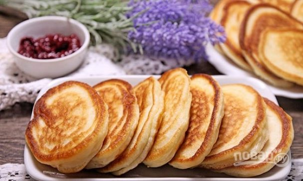
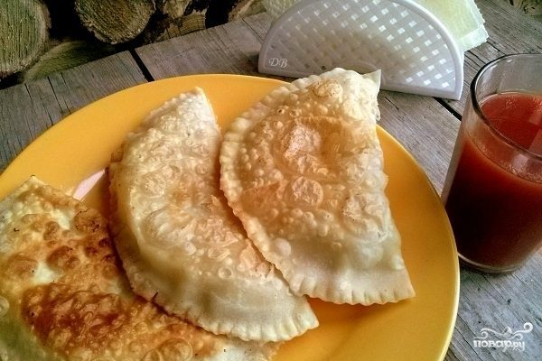
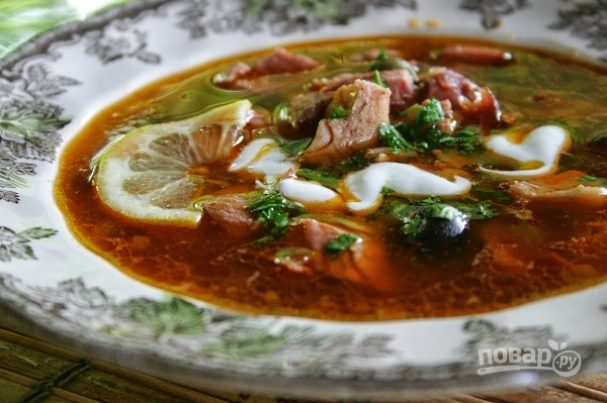
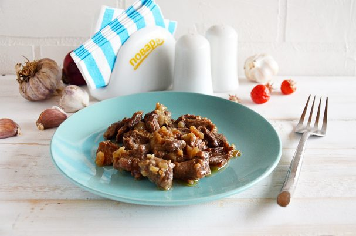
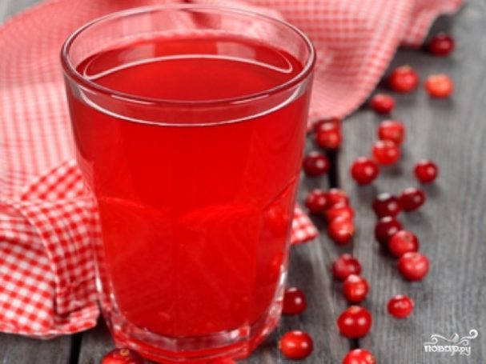

Какие блюда мне нравятся
Блюда русской кухни
| № | Название блюда | Моя оценка | Ссылка на рецепт | Вас ожидает это... |
| 1 | Оладьи на кефире классические | 10/10 | Оладьи на кефире - подробности |  |
| 2 | Чебуреки из заварного теста с водкой | 10/10 | Чебуреки - подробности |  |
| 3 | Солянка класическая | 10/10 | Солянка - подробности |  |
| 4 | Говядина по кремлёвски | 10/10 | Говядина по кремлёвски - подробности |  |
| 5 | Брусничый морс с медом | 10/10 | Напиток - подробности |  |